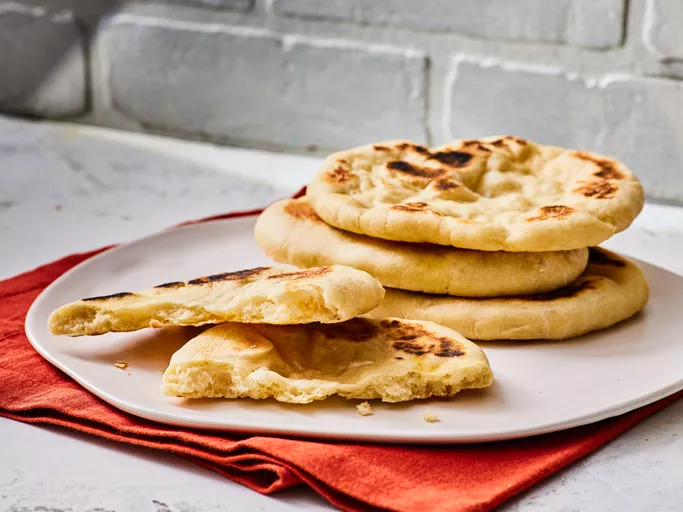

Homemade Pita Bread

Description
This pita bread recipe is superior to the stuff you get at the grocery store; it's not even close. In addition to
being delicious to eat, it's also extremely easy to make!
Ingredients
- 1 (.25 ounce) package active dry yeast
- 1 cup warm water (100 degrees F / 38 degrees C)
- 1 ½ tablespoons olive oil
- 1 ¾ teaspoons salt
- 1 ¾ cups all-purpose flour, or as needed
- 1 teaspoon olive oil, divided
Steps
- Gather all ingredients.
- Place yeast in the bowl of a stand mixer and add 1 cup warm water and 1 cup flour. Whisk together, then let sit
until mixture bubbles and foams, about 15 minutes.
- Add 1 1/2 tablespoons olive oil and salt into the yeast mixture, followed by 1 1/2 cups flour. Mix at low speed,
using a dough hook attachment, until dough is soft, supple, and slightly sticky. Knead dough with machine on low
speed until slightly springy and still soft, 5 to 6 minutes. If dough sticks to the sides of the bowl, add up to
1/4 cup more flour, a little at a time.
- Turn dough out onto a floured work surface and form into a ball.
- Wipe inside of bowl with 1/4 teaspoon olive oil. Turn dough around in bowl to lightly cover with oil; cover bowl
with foil and let rise until dough has doubled in size, about 2 hours.
- Once dough has doubled, remove from bowl and place onto a lightly floured work surface. Lightly pat into a flat
shape about 1-inch thick. Use a knife to cut dough into 8 equal pieces.
- Form each piece into a small round ball with a smooth top, pulling dough from the sides and tucking the ends
underneath the bottom.
- Cover dough balls with lightly oiled plastic wrap and let rest for 30 minutes.
- Transfer the dough balls to a lightly floured work surface and sprinkle the tops with flour. One at a time,
gently pat the dough with your fingers, forming a flat, round disc about 1/4-inch thick. Let the shaped dough
rest for 5 minutes.
- Brush a cast iron skillet with remaining 3/4 teaspoon olive oil and place over medium-high heat. Lay one round
of dough into the hot skillet; cook for 30 seconds, then flip and cook for 1 to 2 minutes. Flip again and cook
the first side for 1 to 2 minutes more, until both sides are golden brown.
- Stack cooked breads on a plate; when cool enough to handle, slice breads in half and open the pocket inside for
stuffing.